| |
|
HESAP BÖLGELERİ
|
Bağımsız sondajlar
Malzemeleri ayrıştır Yardımcı Programlar Genel Bilgiler Bu menü, eksenin tam boykesit hesaplamasının hangi bölümlerde oluşturulacağını, her bölümde hangi tip kesitin kullanılacağını ve arazi tipi, kalınlıklar vb. gibi diğer verileri tanımlamaya olanak tanır. Dolayısıyla, hesap bölgelerinin tanımı, tüm hesaplamaları kontrol eden unsurdur. 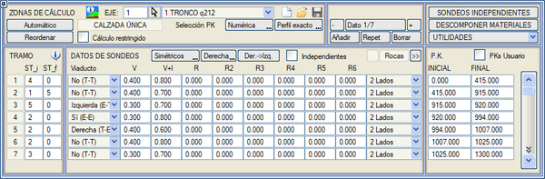
[Kaydet]  ve [Yükle] ve [Yükle]  düğmeleri, bir hesaplama bölümleri tanımını .trm uzantılı dosyalara kaydetmeye ve/veya geri yüklemeye olanak tanır. düğmeleri, bir hesaplama bölümleri tanımını .trm uzantılı dosyalara kaydetmeye ve/veya geri yüklemeye olanak tanır..trm dosyası, hesaplama bölgelerinin tanımını, ayrı bölümlendirme H, Y, D, V, taban kotları ve duvar tepesi ve .dar tablolarını içerir. Dolgu kaplaması menüsünde, .tr2 uzantılı dosyalar kaydedilebilir. Yarma kaplaması menüsünde, .tr3 uzantılı dosyalar kaydedilebilir. Eksenler arası duvar menüsünde, .tr4 uzantılı dosyalar kaydedilebilir. Kullanıcı KM'leri seçeneği, KM'leri kullanıcı değerleriyle girmeye olanak tanır. Seçenek etkinleştirilebilir/devre dışı bırakılabilir ve etkinleştirme durumu .vol dosyasına kaydedilir. Tip Kesitlerin Bölümlendirilmesi Her bir bölümün ilk sütununda başlangıç tip kesiti (TK_b) ve bitiş tip kesiti (TK_s) belirtilmelidir, öyle ki birincisi bölümde kullanılacak tip kesitin numarasını tanımlar. Eğer başlangıç tip kesitine 0 değeri belirtilirse, program bunun bir yapı olduğunu varsayar ve yalnızca üstyapıya karşılık gelen kısmı hesaplar, bir önceki bölümün üstyapı kesitini uygular. Eğer başlangıç tip kesiti sıfırdan farklı bir değere sahipse ve bitiş değeri sıfırsa, TK_b tüm bölüme uygulanacaktır. Eğer başlangıç ve bitiş tip kesitleri farklı değerlere sahipse (ve sıfırdan farklıysa), program, bölümün başlangıç KM'sinde TK_b'yi ve bitiş KM'sinde TK_s'yi uygulayarak, her iki tip kesitin geometrileri arasında bir doğrusal geçiş gerçekleştirecektir. Geçişlerin tutarlı olması için, başlangıç ve bitiş kesitlerinin her yüzeyde aynı sayıda köşe noktasına sahip olduğunu kontrol etmek gerekir. Aksi takdirde, program bir ve diğer kesitin noktalarını sırayla kullanarak ilerler. Tip kesitlerin numaraları burada sırasız kullanılabilir ve gerektiği kadar tekrarlanabilir; yani, bir tip kesit bir eksen boyunca istenildiği kadar uygulanabilir. 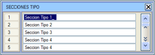[?] düğmesi, kullanıcının bunları daha iyi tanımlamasına ve hatta adını değiştirmesine olanak tanıyan tip kesit adlarını içeren bir diyalog kutusu açar; aynı işlem BOYKESİT → [TİP KES., TERASMAN]'dan da yapılabilir. Bölümün başlangıç ve bitiş KM'leri ile ilgili olarak, aşağıdaki hususlar göz önünde bulundurulmalıdır:
Örnek:
3. bölümde, KM 275'te tip kesit 1 ile başlanır ve KM 390'da tip kesit 3 ile bitirilir; her iki tip kesit arasında doğrusal bir geçiş yapılır. Program, bu nedenle, hesaplamadan önce veya [Yeniden Sırala] fonksiyonuyla yeniden sıralayacaktır:
Kısıtlı Hesaplama seçeneği, hesaplamayı iki KM arasında kısıtlamamızı sağlar. Eğer hesaplamanın bu KM'ler arasında tam olarak başlamasını ve bitmesini istiyorsak ve arazi enkesitleriyle kesişmemişse, Enkesit Enterpolasyonu aracında (T Enterpolasyonu) Hesap bölgeleri seçeneği etkinleştirilmelidir. Kısıtlı bölgeyi tanımlamak için KM'ler, KM Seçimi moduna uyar: Sayısal/Enkesit_tıklama/Enterpolasyon. Her bir hesaplama bölümü için, kesitin hangi tarafının inşa edileceği belirtilebilir:
Demiryolu eksenleri durumunda, çift hat için, ayrıca şu seçenekler de mevcuttur:
İki hattan biri iptal edildiğinde, inşa edilen hattın balastının iç şevi, alt balastın tavanına değene kadar tamamlanır. Sadece hat ve travers, rayları ve traversleri tanımlayan elemanlar hariç tüm platformu kaldırır. 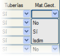Jeoteknik Yok olarak işaretlenen bölümlerde, bu malzemelerin metrajları yapılmayacak ve dolayısıyla kütleler diyagramına da bir değer katmayacaktır. Bu seçeneğin etkili olması için, kullanılan metraj tablosunda o metrajın G kutucuğunun işaretli olması gerekir. Hesap Bölgeleriyle İlişkili Jeoteknik. Yapılar Her bir hesaplama bölümü veya aralığı, projenin her bir bölgesine uygulanan bir dizi parametre ve tip kesitle ilişkilidir. Güzergah boyunca, aralıklara göre uygulanan bir jeoteknik gerçeklik de bulunur:
Normalde, B, B+U ve K için aynı değer verilirse, bitkisel toprak örtüsünden kayaya geçildiği kabul edilir ve program üç çizgi oluşturur:
Toprak işleri hesaplamalarında, B ve U seviyeleri, yarma veya dolgu olmasına bakılmaksızın her zaman kazılır. Kazılan toprak ve kaya hacimleri, toplam yarmadan bitkisel ve uygun olmayan zemin çıkarılarak elde edilir. Dolguda, hesaplanan doldurulacak hacim, mevcut arazi yüzeyine kadar olan hacim artı bitkisel ve uygun olmayan zemin hacmidir, çünkü bunlar dolgu yapılmadan önce kazılır. 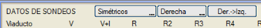 Sondaj verileri simetrik (varsayılan) veya asimetrik olabilir. İkinci durumda, eksenin sağına ve soluna farklı kalınlıklar tanımlamak mümkündür. Simetrik sondajlar durumunda, sağ için tanımlanan veriler alınacaktır. [Sağ->Sol] düğmesi, sağ taraf için tanımlanan tüm verileri sol tarafa kopyalar. Asimetrik sondajlar kullanıldığında, eğer kaya verileri yalnızca iki taraftan biri için tanımlanırsa, Istram diğer tarafa Tamamlayıcılar/Parametreler'de konulan kaya olarak kabul edilecek maksimum derinlik değerini atayacaktır. Arazi Enkesit Dosyasında Tanımlanan Yüzeyler Eğer arazi enkesitinde birden fazla yüzey görünürse, birincisi bilinmeyen tipte ve ardından sağlam zemin tipi (66) gelirse, program birinci yüzeyin bitkisel toprak örtüsü olduğunu varsayar. Örneğin: Örnek:
Eğer arazi enkesitleri dosyasında bitkisel toprak örtüsü, uygun olmayan veya kaya için kullanılan tiplere sahip yüzeyler varsa, bu SONDAJ VERİLERİ menüsüne girilen veri dikkate ALINMAZ; dolayısıyla dosyada gelen veriler önceliklidir. Eğer arazi enkesitinde yalnızca sağlam zemin (ve kaya) yüzeyleri geliyorsa, sağlam zemin (ve kaya) derinliğinden farklı bir derinliğe sahip olacak olan uygun olmayan zemin hattını vermek mümkündür. Uygun olmayan zemin hattı için sondajla verilen derinliğin, arazi enkesitleri dosyasında gelen sağlam zemin ve/veya kaya derinliklerinin altına düşmemesini sağlamak kullanıcının sorumluluğundadır. Yapı ve Eğik Yapıda Bölgelerin Tanımı Eğer bir hesaplama bölümünde 0 tip kesiti beyan edilirse, sistem araziyle kesişimleri hesaplamaz ve terasman geometrisi, üstyapı katman paketinin kalınlığı ve üstyapı katman paketinin kapanış şevleri için hemen önceki bölümde kullanılan tip kesitin verilerini kullanır. Eğer yapı için mevcut herhangi bir tip kesitten farklı verilere ihtiyaç duyulursa, bitkisel toprak örtüsünün kalınlığı için negatif bir değer yazarak yeni bir tip kesit oluşturmak ve bunu yapı bölgesinde uygulamak da mümkündür veya daha iyisi, ilgili sütunda EVET belirterek bölümü YAPI olarak işaretlemek. Bu sonuncusu, daha sonra aynı bölgede, aynı sondaj verilerine sahip olması gereken diğer eksenlerle [Branşman ekle] seçeneği kullanılırsa önemlidir. Refüj bölgesinde, yapıdaki tip kesit alt paralel ve uzatılmış alt banket olduğunda refüj kaldırılır. Program ayrıca, yapının kesitin yalnızca bir tarafında göründüğü enkesitleri de dikkate almaya olanak tanır; bu, yeni yarı-yapı tip kesitleri tanımlamaya gerek kalmadan enkesitlerdeki toprak işleri metrajını iyileştirir. Her enkesitte, kenar ayağının konumu çizilir ve toprak işleri ile yapıdaki bölge mükemmel bir şekilde sınırlandırılır. Bu da, aşağıdaki örnekte gösterildiği gibi, YAPI sütununda beyan edilir:
Bu şekilde, eğik yapıların bulunduğu hesaplama bölgelerini mekanize etmek çok basittir, toprak işleri ve üstyapı metrajları hassas olduğu için işi büyük ölçüde kolaylaştırır. Viyadük bölgelerinde, [Evet->(KMler)] tipi yerine [Evet (B-B)] tipi kullanılması önerilir. Otoyollarda ve otobanlarda (çift platform). Her iki taraf için tek bir tabliyeli bir viyadük yerleştirirsek: Taraf [SD], programın, yapının tanımında girilen verilerden eğik yapının farklı bölgelerinin KM'lerini belirlemesi için hesaplama bölgelerinde Viyadük [Evet->(KMler)] komutu kullanılabilir. 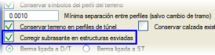 Ayrıca, bu durumlarda, yarı-yapıdaki KM'ler için, enkesitin yapıda olan kısmında farklı bir terasman tanımlamak da ilgi çekici olabilir. Bunun için, BOYKESİT → TAMAMLAYICILAR → Parametreler diyalog kutusunda Eğik yapılarda terasmanı düzelt kutucuğunun etkinleştirilmiş olması gerekir. Bu seçenek, SOL ve SAĞ yarı-yapı bölümlerinde, yapının kesitinde tanımlanan minimum kalınlığı kullanarak terasmanı değiştirerek çalışır. 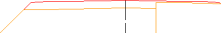Örneğin, eğer kesitin 0,5 m üstyapı kalınlığı varsa ve yapıda yalnızca 0,1 m aşınma tabakası varsa, eğik bölgelerde dolgu kısmında tam üstyapı katman paketi görünecek ve yapı kısımlarında yalnızca üst 10 cm görünecektir, şekilde gösterildiği gibi. Ayrıca, yapıda kullanılan üstyapı katman paketi uygulanır (yapının 1 metre içinde kullanılan paket aranır). Çok eğik yapılar için, her iki tarafta da yapıda enkesitlerin bulunmadığı, bunun yerine bir tarafta yapı başlamadan önce diğer tarafta bittiği durumlarda; Hesaplama Bölgeleri diyalog kutusunda Merkezi adlı bir tip oluşturulur. Böyle bir yapı, şu şekilde bir hesaplama bölümleri dizisiyle tanımlanabilir: Sağ (D-Y) / Merkez/ Sol (D-Y). Merkez tipi, çakışma bölgesinde tanımlanmalıdır; bu bölümde enkesitler her iki tarafta da dolguya sahip olacak, ancak içte boş bir bölge olacaktır (yapının geçtiği yer). Tüm bu bölümler için, dolgu tip kesiti kullanılmalıdır. Şimdilik, bu tür bir yapı yarma konilerini desteklememektedir. Bu tür yapılarda Yarma Konilerine izin verilir. Yamaçlarda (D-Y) veya (Y-D) kullanıldığında, o bölümden önce veya sonra bir yapı tanımlanmadan, terasmanın kesişim noktasına kadar olan bölge konsol olarak hesaplanır. Dolgu tarafında, seçme malzemeler bu noktaya kadar götürülecektir. Bağımsız Sondajlar [BAĞIMSIZ SONDAJLAR] düğmesi, burada açıklandığı gibi, tip kesitlerin bölümlendirilmesini jeoteknik bölümlendirmeden bağımsız hale getirmeyi mümkün kılan bir diyalog kutusu açar. Malzemeleri Ayrıştır 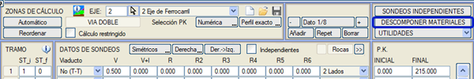
Bu diyalog kutusu aracılığıyla, kullanıcı .dar tablosunda tanımlanan her bir jeoteknik malzemeyi (Bitkisel, Uygun Olmayan, Y_Toprak, Kaya 1, Kaya 2...) beş farklı malzemeye kadar ayrıştırabilir. 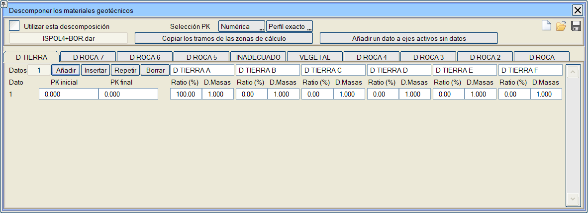
Bu diyalog kutusunun çalışması için Bu ayrıştırmayı kullan kutucuğunu etkinleştirmeliyiz. Bu malzemelerin her birine, bölümlere göre orijinal malzemenin bir yüzdesi, Oran % ve kütleler diyagramı için bir geçiş Katsayısı atanabilir. Enkesitlerde ve metraj raporlarında, orijinal malzeme, bileşenleriyle (Y TOPRAK A, Y TOPRAK B, Y TOPRAK C... örneğin) değiştirilir. Veri olmayan aktif eksenlere bir veri ekle: Bu, Jeoteknik malzemeleri ayrıştır verilerine sahip olmayan her aktif eksende, her malzemede ilk alt malzemede %100 ile bir satır oluşturur ve Bu ayrıştırmayı kullan'ı etkinleştirir. Çünkü ayrıştırmayı bir eksende kullandığımızda, o zaman hepsinde kullanılmalıdır. Kavşak ve dönel kavşaklardaki kollar, başladıkları eksenin Jeoteknik Malzeme Ayrıştırmasını devralır. Kırmızı Kot Değerlerine Göre Tanımlanan Yapılar YAPILAR (KIRMIZI KOTA GÖRE) düğmesi, burada açıklanan bir araca erişim sağlar; bu araç sayesinde program, kullanıcı tarafından belirtilen kırmızı kota bağlı olarak yapı ve tünel için hesaplama bölümleri oluşturur. Kırmızı kota göre yapılar (viyadük ve tünelleri bölümlendirmek için kullanılır). Dört kırmızı kot aralığından yola çıkarak uygulanacak Tip Kesitleri ve Üstyapı Kesitlerini belirleme imkanımız var; ayrıca düz ve kurp arasında da ayrım yapabiliriz. 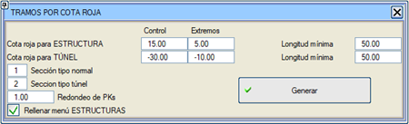 Eksenlere Göre Sondajları Değiştir 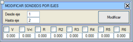Birden fazla eksen için aynı anda, tüm hesaplama bölümlerinde, farklı malzemelerin derinliklerinden herhangi birini değiştirmeye olanak tanır. Bu yardımcı program, Bağımsız Sondajlarla da çalışır. Eğimlere Göre Bölümler 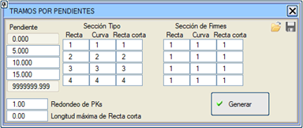Her bir eğim bölümü için, boykesitte uygulanan eğime bağlı olarak, düz ve kurpta farklı bir tip kesit ve farklı bir üstyapı katman paketi atanabilir. Belirli bir uzunluktan daha kısa olan düzlükler için farklı Tip Kesitler tanımlamak mümkündür. Bu menünün yapılandırma dosyasını .tpp uzantısıyla kaydetmek veya yüklemek mümkündür. Borulara Göre Bölüm 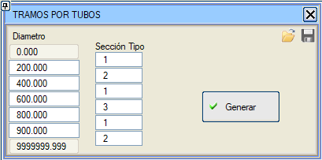 Her bir boru için bir bölüm oluşturmaya olanak tanır ve borunun çapına göre bir tip kesit atar. Her bölüm, borunun başlangıç km'sinde başlar ve bir sonraki borunun başlangıç km'sinde veya son enkesitte biter. Yalnızca boru hatları eksenleri için. Bir şablonumuz olabileceğini unutmayın, örneğin Hendek.dig, farklı eksenlerde uygulanmak üzere önceden tanımlanmış bir dizi tip kesit içeren bir *.vol dosyası içerebilir. Üstyapı Bölümlerini Kopyala Üstyapı Katman Paketi menüsünde verilen bölümlendirmeyi kopyalamaya olanak tanır. Viyadükleri Hesap Bölgelerine Aktar Yapılar menüsündeki viyadüklerin KM'lerini, yapı bölümleri olarak ekleyerek hesap bölgelerine kopyalar. Hesap Bölgesinden Bağımsız Kesitlerin Bölümlendirilmesi 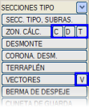Buraya kadar açıklanan hesaplama bölgeleri, tip kesitin bir bütün olarak uygulanması için bölümlendirmeyi tanımlar. [H], [Y], [D] ve [V], hendekleri, yarmaları, dolguları ve vektörleri bağımsız olarak bölümlendirmek için diğer menülerdir. Eğer [H] menüsünde, i kesitinin belirli KM'ler arasında sağ tarafta uygulandığı bir bölümlendirme tanımlanırsa, o bölümde j kesiti uygulanıyor olmasına rağmen, kullanılacak hendeğin i kesitinin sağ hendeği olduğu belirlenmektedir. Genel durumda olduğu gibi, eğer bitiş tip kesiti sıfırdan farklı ve başlangıçtakinden farklıysa, hendek, bölümde, iki tip kesit arasında doğrusal bir geçiş yapacaktır. Hendeklerin alt bölümlendirmesinde her veri için bir seçeneğimiz var: Sadece Toplam Alternatif İçin. Etkinleştirildiğinde, bu hendeğin yalnızca yarma kesiti, kontrol, palye ve hendek seçeneğini içeren bir Alternatif TK'ye atladığında kullanılacağı anlamına gelir. 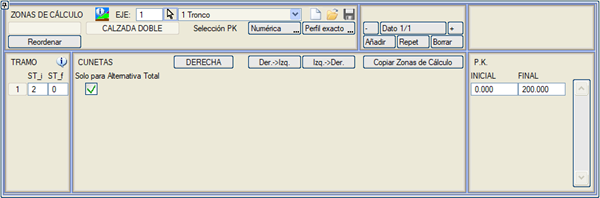
[Y] ve [D], yarmalar ve dolgular için bağımsız bölümlendirmeler beyan eder ve tam olarak aynı şekilde çalışır. [H], [Y], [D] ve [V] bölümlendirme tabloları, sağ veya sol tarafı seçmeye olanak tanıyan bir anahtara sahiptir. Sağ taraftaki veriler sola Sağ->Sol ve tam tersi Sol->Sağ kopyalanabilir. [H], [Y], [D] ve [V] tarafından kapsanmayan bölgelerde, HESAP BÖLGELERİ'nin temel bölümlendirmesinde verilen kesit uygulanacaktır. Bu alt bölümlendirme, dolayısıyla, genel bölümlendirmeyi tamamlar ancak yerine geçmez. Hesaplayıcı, HESAP BÖLGELERİ tablosunun verilerine ihtiyaç duyar. Tüm bu diyalog kutularında, [H], [Y], [D] ve [V], Hesap Bölgesi menüsünde tanımlanan bölümlendirmeyi Kopyalama imkanı vardır.
|